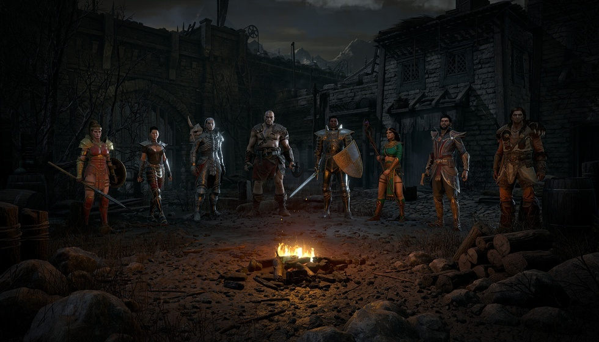
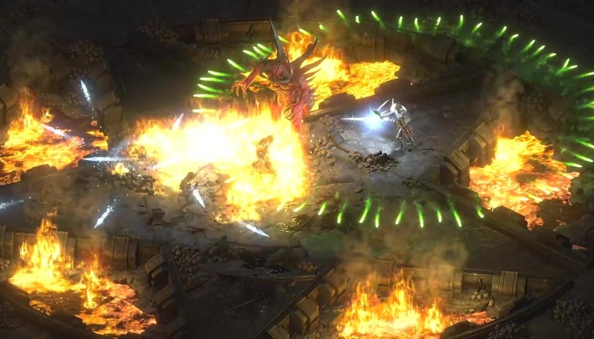

告别瞎加点！暗黑2七大职业强势流派玩法全解析
不少暗黑2老玩家和新手，都会踩技能加点的坑，盲目照搬流派导致开荒吃力、毕业无望、刷装效率低下。暗黑2七大职业流派分化极其鲜明，没有通用万能加点。结合国内玩家单机开荒、单刷MF、毕业攻坚、打钱养老的主流玩法，整理出全职业适配不同场景的顶配流派攻略。
玩暗黑2很容易陷入一个误区：看见别人玩什么强势套路就直接照抄加点，完全不考虑自己平时上线的游玩方式，本来用来放松的游戏，硬生生因为装备跟不上、打法不契合玩得格外煎熬。大体上所有玩法能分成四类，分别对应开荒起步、日常刷装备、成型后攻坚高难度本，还有纯娱乐向的辅助玩法，而一个流派好不好上手，核心就看它吃不吃毕业装备。
国内绝大多数暗黑2玩家都是离线单机慢慢玩，每次上线时间零碎，没耐心一遍遍反复刷符文做毕业装备，这种情况下，起步简单、不用顶配装备就能顺畅通关的套路，远比后期伤害爆炸但前期寸步难行的毕业流派更合适。很多人就是硬抄顶配加点，结果小号练级全程刮痧，最后直接弃号重练。

很多人玩暗黑最先上手的就是法师，这个职业能玩得舒不舒服，加点套路基本就定死了刷装备的整体效率。法师主流分两条路子，一条是暴风雪冰法，靠着大范围冰系AOE清怪，再用传送灵活拉扯怪物，前期随便凑几件普通装备就能成型；另一条是闪电系法师，后期伤害拉满，但必须做出无限符文装备才能解决电抗怪物，前期没有核心装根本没法玩。
国内大部分普通玩家没必要跟风硬练电法，冰法不用绑定专属暗金或者符文装备，从开荒一路用到后期刷装备都够用，容错高还不用死肝材料，作为长期养老刷宝的选择性价比要高出一大截，也是很多常年单机玩家一直坚持的流派。
圣骑士一直被大伙称作版本万金油，两条主流路线分别适合两种游玩状态。祝福之锤玩法依靠魔法伤害输出，游戏里几乎没有怪物能免疫魔法伤害，哪怕装备一般，通关地狱难度也不会有明显卡点，加点优先点满锤子本体，再补协同增伤技能就够用。而双热近战流主打单体高额物理伤害，打BOSS速度极快，但非常吃悔恨这类顶级符文武器，普通玩家很难攒齐成型所需的装备，入门门槛偏高。
死灵法师绝对是纯新手最友好的起步职业，两套玩法覆盖入门到进阶全程。纯召唤流靠骷髅大军和石魔扛伤害输出，只需要点出核心召唤技能和两个关键诅咒，哪怕装备简陋，怪物也很难摸到本体，容错拉满。等熟悉游戏机制之后，可以转毒骨双修，用剧毒新星作为主要输出手段，召唤物依旧用来保证生存，专门用来对付各种元素免疫的精英怪。
野蛮人不只是只能玩近战砍杀，还有专门用来摸金币的休闲玩法。走旋风斩路线打击感很强，群怪和单BOSS都能应对，缺点是十分依赖武器底子，没有合适装备旋风斩伤害会非常刮痧。另外还有专门的打钱野蛮人，自身不用上前打怪，靠吼叫buff给佣兵增伤，固定在崔凡克区域反复刷金币，拿来赌博拼暗金装备，属于很佛系的养老玩法。

亚马逊分标枪和弓系两条路线，两者刷图定位差别很大。标枪亚马逊的闪电之怒链式伤害，刷奶牛关效率几乎没有对手，唯一硬性要求就是无限符文装备破除电抗；弓马依靠多重箭远程持续输出，搭配冻结箭控住近身怪物，核心需要信心弓提供光环加成。还有一种小众附魔弓马，需要法师队友给武器附高额火焰伤害，成型后输出会超越常规弓马。
刺客两条路线分化很明显，新手和老手完全是两种体验。刚入坑推荐玩陷阱刺客，往地上布置电系陷阱自动攻击敌人，不用贴身肉搏，生存压力很小，前期升级过渡很顺滑；龙虎武学刺客则是后期成型玩法，需要熟练衔接连招打爆发，还要凤凰、悔恨多件毕业装备支撑，操作和养成成本都更高，更适合玩透游戏之后再尝试。
德鲁伊在七大职业里趣味性最强，但单论强度不算拔尖。风德以飓风、龙卷风作为法系输出，飓风装甲能大幅提升生存，在低人数组队场景里刷图体验很好，装备凑齐末日之后减抗拉满，游玩体验会更顺畅。变形玩法可以切换狼形态或者熊形态近战肉搏，技能机制新鲜有趣，缺点是同装备条件下，输出上限不如其他近战职业，主打一个玩法新鲜感。
刚入坑完全不用纠结五花八门的加点方案，认准几个低门槛流派就能安稳通关地狱。纯零起点新手首选死灵纯召唤、陷阱刺客，不用精细操作，不用刻意刷装备，顺着任务升级就能稳步推进剧情。想稍微往进阶过渡，祝福之锤圣骑士最合适，几乎不存在机制克制的怪物，全程不会出现卡关卡死的情况。
如果平时上线主要目的就是反复刷装备攒家底，暴风雪冰法是最稳妥的选择。传送可以直接跳过大量赶路环节，暴风雪大范围清群怪，冰系掌握能稳定降低怪物冰抗，从头到尾不需要绑定刚需毕业装，开荒、搬砖、养老一套加点通用，是不少长期单机玩家的固定选择。
等装备慢慢攒齐，追求极限输出就可以尝试版本顶配流派。电法、标枪亚马逊做出无限之后，清图速度是全职业第一梯队；双热圣骑士、武学刺客在毕业装备加持下，单挑BOSS的能力拉满，适合挑战高PP难度下的攻坚内容。
其实暗黑2不存在绝对无敌的加点模板，角色满级技能点数量有限，没法同时把多条分支全部点满，最优思路永远是一条主输出路线搭配少量增伤与保命技能。流派强不强只是纸面数据，能不能契合自己每天的游玩时长、刷装备耐心，才是选套路最关键的地方。
每种贴合自己游玩习惯的加点方式，就是属于自己的版本答案。玩暗黑没必要照搬别人的毕业套路硬肝，按照自己的游玩节奏选择流派就好。不管是新手慢慢开荒、闲时刷几件装备，还是装备成型后挑战高难度，或是单纯上线摸金币放松，每一种玩法都有对应的合适流派。你平时常玩的本命职业和具体流派是什么？可以一起聊聊。
关于我们
📱 公众号名称：三天游戏
✍️ 作者：曾三天
扫码关注公众号，获取每日最新资讯

商务合作与版权
商务合作 / 内容投稿 / 品牌推广
请关注公众号「三天游戏」后台留言联系
版权声明：本文由作者整理，转载需注明出处。